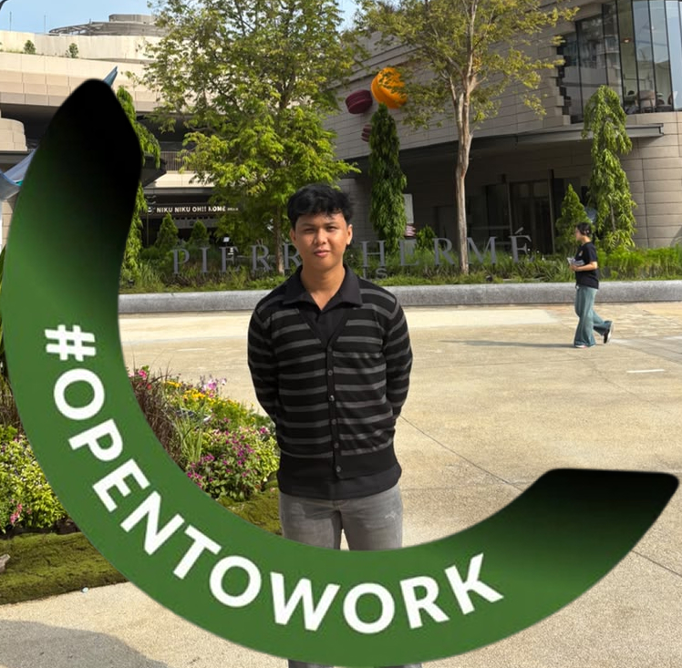
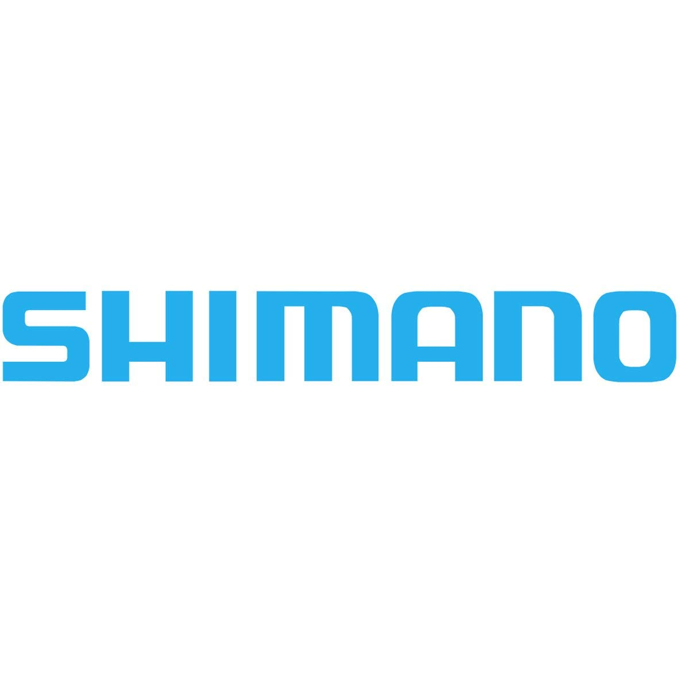
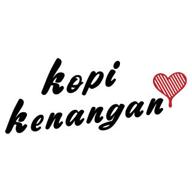
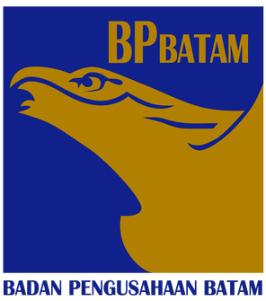

I have hands-on experience across creative, technical, and operational roles, including graphic design, IT support, food & beverage service, and production operations. I started my career in operational environments such as F&B and production, where I learned discipline, teamwork, time management, and working under pressure. These roles shaped my work ethic and responsibility in real-world settings. I later developed experience in graphic design and creative projects, working on digital content, print media. I am comfortable handling revisions, deadlines, and communication with different stakeholders. Currently, I work as a freelance graphic designer handling client projects. I also have experience supporting basic IT operations and user needs, which strengthened my problem-solving skills and adaptability to systems and workflows. Currently, I am pursuing my degree in Cyber Security while working as a freelance graphic designer to strengthen my technical foundation and long-term career direction. My goal is to grow into a professional who can combine operational discipline, creative thinking, and technology skills in practical environments.

Founder & Graphic Designer
Nineteen Studio
2025 — Sekarang
- Handling the full design process from briefs and concept research to precise, functional visual execution across digital, print
- Managing client expectations while communicating directly with print vendors regarding technical specifications, materials, and color accuracy.
- Ensuring high-quality final outputs while aligning vendor production schedules with client deadlines for on-time delivery.

Production Operator
PT SHIMANO Batam
2024 — 2025
- Assembled bicycle shifting lever components with precision and efficiency.
- Conducted product quality inspections to ensure compliance with standards
- Achieved both daily and monthly production targets. Worked quickly, accurately, and in an organized manner to maintain production flow.

Barista
Kopi Kenangan
2022 — 2023
Provided exceptional customer service during high-volume shifts while maintaining product quality, exact recipe precision, and smooth store workflow.
Proactively promoted beverage menu items and retail merchandise, consistently hitting and exceeding sales targets while driving merchandise revenue.
Acted as Store PIC and cashier, managing daily coffee bar operations, point-of-sale transactions, stock takes (stock opname), and timely inventory ordering.
Head Bar
Olive & Co
2023 — Sekarang
Spearheaded beverage production across coffee, cocktails, mocktails, milkshakes, fresh juices, and alcoholic/non-alcoholic drinks, adhering to strict quality control, flavor profiles, and presentation standards.
Managed weekly bar procurement and stock replenishment, accurately forecasting ingredient needs based on customer traffic to minimize waste and ensure maximum ingredient freshness.
Conducted regular stock takes (stock opname), monitored usage variance, and maintained high bar hygiene and operational efficiency without direct floor or cashier duties.

IT Support Engineer
PTIK Badan Pengusahaan Batam
2019 — 2020
Managing both software and hardware Computer Lab in the IT Center
Monitor and assist clients with the installation of new servers and maintenance of existing servers within the Data Center BP Batam.
Input and prepare annual financial reports for the IT Center at BP Batam.